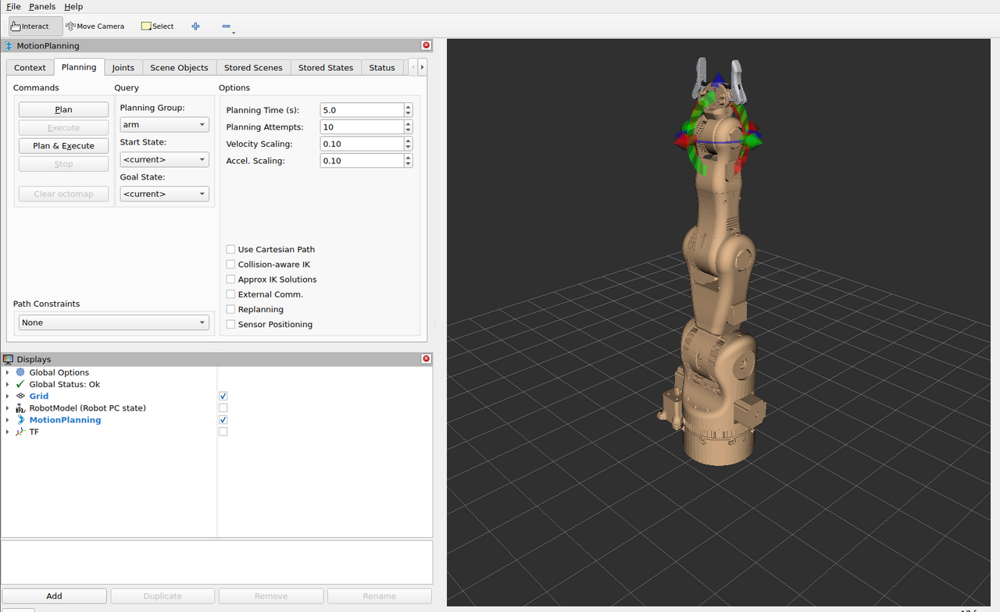
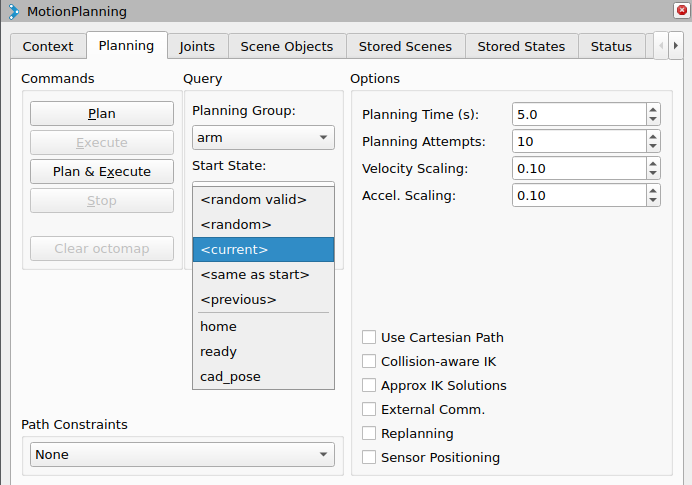
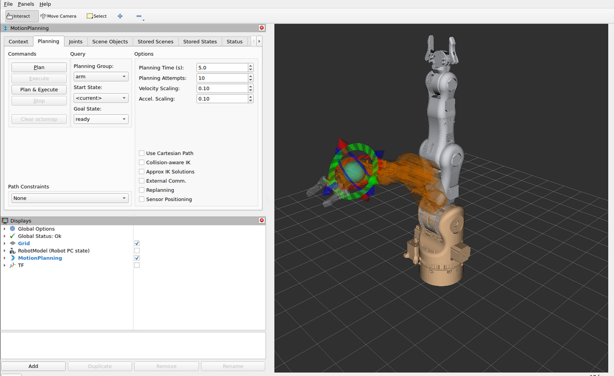
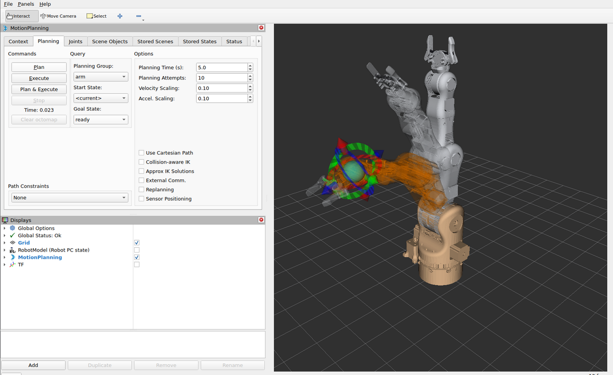
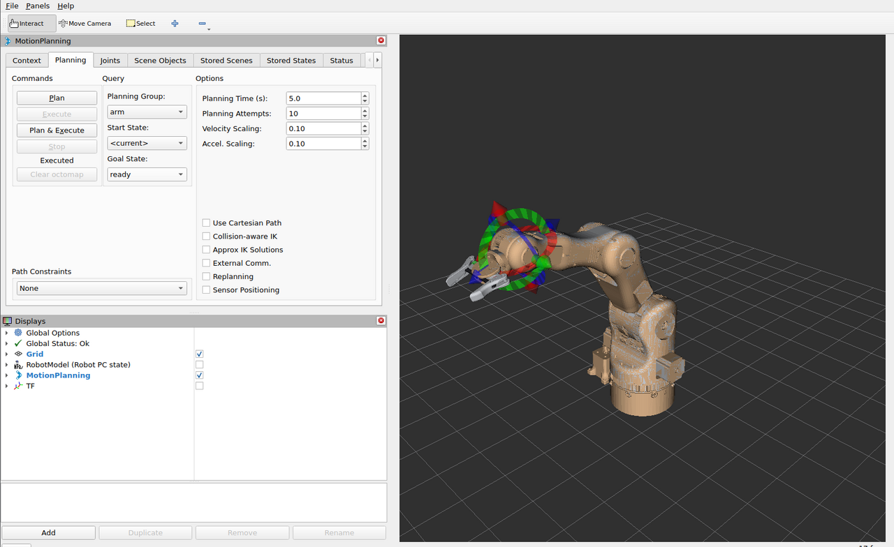
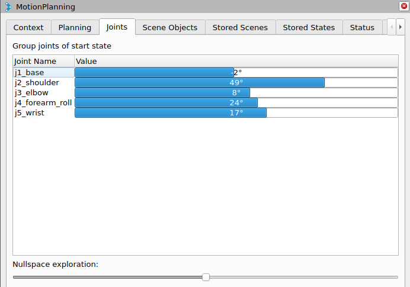
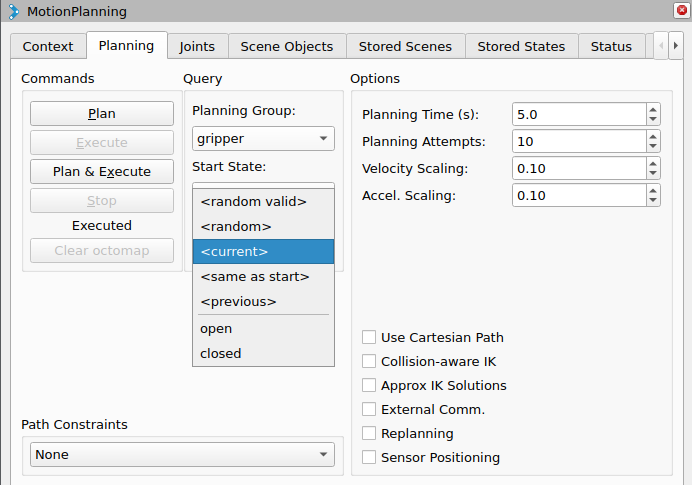
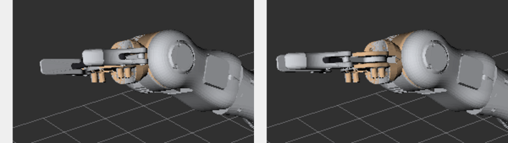
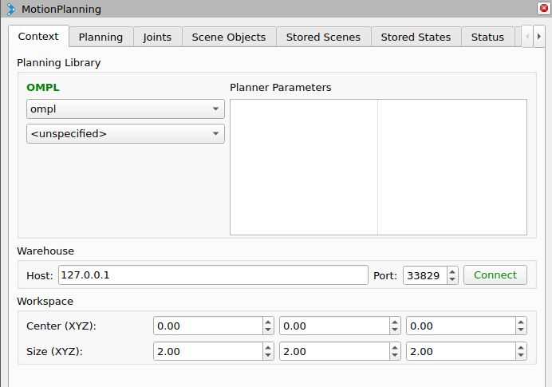

Planning in RViz2¶
RViz2 is the operator interface of the Operator PC. It starts with
rviz/moveit.rviz from smartmanipulator_x_moveit_config and talks to move_group
through the MoveIt MotionPlanning plugin. Every plan is computed on the Operator PC;
only the execution goes to the Robot PC.
This page walks through a complete session: start, a named goal, planning, execution,
a goal set with the interactive marker, the joint view, the gripper and the planner
settings. The screenshots were taken with the Robot PC running mock hardware on
smx_net; with mock hardware every commanded position becomes the joint state at once,
so the arm in RViz2 follows the trajectory exactly.
Before you start¶
| Check | How |
|---|---|
| The Robot PC runs | In the Robot PC repository: docker compose -f docker/docker-compose.yml up robot_pc |
| The Operator PC runs | In this repository: docker compose -f docker/docker-compose.yml up operator_pc (Getting started) |
move_group is ready |
Its log ends with You can start planning now! |
Two ERROR lines in the log at start-up are normal and can be ignored:
| Message | Meaning |
|---|---|
No 3D sensor plugin(s) defined for octomap updates |
No depth camera is configured; the planning scene has no octomap |
Action server: /recognize_objects not available |
The Detect button of the Scene Objects tab has no object recognition behind it |
1. The window¶

| Area | Content |
|---|---|
| Toolbar | Interact (move the marker, the default tool), Move Camera, Select |
| MotionPlanning panel | Tabs Context, Planning, Joints, Scene Objects, Stored Scenes, Stored States, Status, Manipulation (behind the arrow) |
| Displays | Grid, RobotModel (Robot PC state), MotionPlanning, TF — tick a box to show a display |
| 3D view | The arm, the goal and the planned path in the fixed frame world |
What the 3D view shows:
| You see | It is |
|---|---|
| Arm in its own colours (light grey, metal parts) | The current state, as reported by the Robot PC in /joint_states |
| Orange, semi-transparent arm | The goal state (35 % opacity). Where it overlaps the current state the arm looks tan, as right after start |
| Red, green and blue arrows and rings at the gripper | The interactive marker on tool_link, the tip of the arm chain |
| Grey arm moving from start to goal | The planned path preview after Plan |
| Display | Default | Shows |
|---|---|---|
| Grid | on | 10 cm cells, 2 m × 2 m, in the fixed frame world |
| MotionPlanning | on | Current state, goal state, interactive marker, planned path |
| RobotModel (Robot PC state) | off | The model from /robot_description, posed by the Robot PC's /tf |
| TF | off | All frames of the robot |
Camera: left mouse button drag rotates the view around the focal point, middle button (or Shift + left) pans, the wheel zooms. With the Interact tool, a drag that starts on the marker moves the marker; a drag that starts anywhere else rotates the camera.
2. Choose a named goal¶
In the Planning tab, check Planning Group arm and Start State <current>,
then open Goal State. The list has the special entries and the named poses from the
SRDF:

| Entry | Goal |
|---|---|
<random valid> |
A random collision-free state — useful to exercise the planner |
<random> |
A random state, may be in collision |
<current> |
The present state of the arm (no motion) |
<same as start> |
The start state |
<previous> |
The goal before the last change |
home |
All arm joints at 0 |
ready |
j2 0.5, j3 0.8, j5 0.6 rad, others 0 |
cad_pose |
j2 0.7416, j3 0.4674, j4 0.1426, j5 0.9151 rad — the pose of the BCN3D CAD assembly |
Choose ready. The orange goal arm moves to the pose, the current arm stays where it
is, and the marker jumps to the goal's tool_link:

3. Plan and check the preview¶
Click Plan. move_group plans with OMPL; the time appears under the buttons (here
Time: 0.023 s) and Execute becomes active. The grey arm plays the trajectory from
the current state to the goal, so you can check the path before anything moves:

If the result is not what you want, change the goal and click Plan again; nothing has been sent to the Robot PC yet.
4. Execute¶
Click Execute. The trajectory goes as a FollowJointTrajectory goal to the Robot PC;
the status under the buttons changes to Executed when the controller reports success,
and the current arm stands in the goal pose:

The two logs show the same execution from both sides:
Operator PC (move_group)
sending trajectory to arm_controller
arm_controller started execution
Goal request accepted!
Controller 'arm_controller' successfully finished
Completed trajectory execution with status SUCCEEDED ...
Robot PC (ros2_control_node)
[arm_controller]: Received new action goal
[arm_controller]: Accepted new action goal
[arm_controller]: Goal reached, success!
Plan & Execute does steps 3 and 4 in one click, without the chance to check the preview. Stop cancels a running execution.
5. Set a goal with the interactive marker¶
The marker sits on tool_link of the goal state. With the Interact tool:
| Handle | Moves the goal |
|---|---|
| Arrow (red, green, blue) | Along that axis of the marker |
| Ring | Rotation about that axis |
| Sphere in the centre | Freely in the view plane |
Grab a handle and drag. While pick_ik finds a solution, the orange goal arm follows the marker:
Then Plan (and check the preview) and Execute, or Plan & Execute.
Position goals only
The Moveo has five arm joints, so it cannot reach an arbitrary position and
orientation. The IK solver matches the tool position and ignores its
orientation (rotation_scale: 0.0 in config/kinematics.yaml), so the marker
always solves for reachable positions; turning the rings has little or no effect
on the goal. See MoveIt 2 configuration for a
best-effort orientation.
If the marker is dragged out of reach, the goal arm stops following (no IK solution); drag it back towards the base.
6. Joints tab¶
The Joints tab lists the joints of the planning group with their values in degrees.
Drag a bar to change one joint directly — useful for small corrections, for example of
j4_forearm_roll, which the position-only marker does not set:

The tab header names the state the bars belong to. Nullspace exploration moves the arm inside the set of joint values that keep the tool where it is.
7. The gripper¶
In the Planning tab, set Planning Group to gripper. The marker disappears: the
gripper is a single joint, not a chain. Goal State lists open (gripper 0.0 rad) and
closed (gripper 1.4 rad; limit 1.45):

Choose closed and click Plan & Execute. MoveIt sends a one-joint trajectory to
gripper_controller on the Robot PC; the gears, pivot arms and fingers mimic the
gripper joint and move with it:

Switch back to Planning Group arm for arm motions.
8. Speed of the motion¶
The Velocity Scaling and Accel. Scaling fields in the Planning tab scale the
joint limits for each request (0–1). RViz2 starts with 0.10: the arm moves at 10 % of
the limits of the robot description (1.0 rad/s for every joint) and of
config/joint_limits.yaml (1.0 rad/s²).
| Motion (measured with mock hardware, scaling 0.10) | Duration |
|---|---|
Arm home → ready |
about 9 s |
Gripper open → closed (1.4 rad) |
about 15 s |
Raise the scaling for faster motions in simulation. The default_*_scaling_factor of
0.3 in joint_limits.yaml applies to requests that do not set a scaling, for example from
scripts; RViz2 always sends its own value.
Placeholder limits
The joint limits are placeholders until the Moveo axes are measured on the real arm. With mock hardware every speed works; keep the scaling low when the Robot PC drives real motors.
9. Planner options¶
Planning tab, Options:
| Option | Default | Meaning |
|---|---|---|
| Planning Time (s) | 5.0 | Time limit per planning attempt |
| Planning Attempts | 10 | Attempts; the best result is kept |
| Velocity / Accel. Scaling | 0.10 | See above |
| Use Cartesian Path | off | Straight line of the tool instead of a joint-space path; it needs an IK solution along the whole line, which the 5-DOF arm may not have — leave off unless you need a straight line |
| Collision-aware IK | off | IK rejects solutions in collision while you drag the marker |
| Approx IK Solutions | off | Accept approximate IK solutions for the marker |
| Replanning | off | Plan again if the scene changes during execution |
Context tab: the planning pipeline is ompl, the only one configured; the planner
<unspecified> uses the pipeline's default planner. Warehouse (a database of stored
scenes and states) is not set up and is not needed. Workspace limits the planning
volume to a 2 m cube around the origin:

What happens on Execute¶
- RViz2 asks
move_groupto execute the plan. MoveItSimpleControllerManagersends it as aFollowJointTrajectorygoal toarm_controller/follow_joint_trajectory(orgripper_controller/follow_joint_trajectory) on the Robot PC.- The Robot PC's
joint_trajectory_controllerinterpolates it at 100 Hz and commands the hardware (mock now). joint_state_broadcasterpublishes/joint_states;move_groupupdates the current state and RViz2 redraws the arm.
MoveIt accepts the execution only if the arm starts within 0.02 rad of the plan's start
(allowed_start_tolerance), and it aborts it if it takes longer than 1.5 × the planned
duration + 1 s. Both settings are in config/moveit_controllers.yaml
(MoveIt 2 configuration). If an execution fails, see
Troubleshooting.
Saving the layout¶
Panel sizes, the camera and display settings can be saved with File → Save Config.
The file in the container is part of the image, so a saved change is lost when the
container is recreated; to keep it, copy the changes into
ros2_ws/src/smartmanipulator_x_moveit_config/rviz/moveit.rviz and rebuild.
move_group without RViz2¶
To start only move_group (for example to plan from a script or from a second RViz2):
docker compose -f docker/docker-compose.yml run --rm operator_pc \
ros2 launch smartmanipulator_x_moveit_config operator.launch.py rviz:=false
Stop the operator_pc service first: both use the fixed address 10.77.0.20. The rviz
launch argument (default true) is the only argument of operator.launch.py.